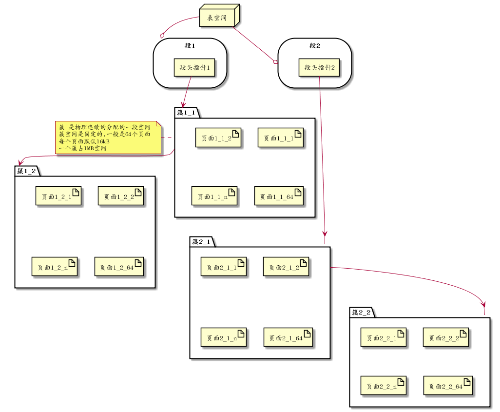

Table of Contents
1 innodb文件结构
1.1 准备
1.1.1 数据库及表准备
create database sample1;
use sample1;
create table sample1( id int not null auto_increment primary key, name varchar(8) );
insert into sample1(name) values('aa');
1.2 Inno数据存储结构说明
1.2.1 表空间文件组成
在/var/lib/mysql目录下执行: tree -a sample1 可以看到如下结果:
sample1/ ├── db.opt ├── sample1.frm └── sample1.ibd
可以看到在准备环节创建的sample1表的对应的文件 : sample1.ibd
(.frm文件对于InnoDB来说只是一个为了与mysql兼容的附属品而已,Mysql是一个插件式的数据库管理系统,它的结构分两层,分别是server层和存储层,server层只有一个,而存储层可以有多个存储引擎)
InnoDB存储引擎的逻辑存储结构和Oracle大致相同,所有数据都被逻辑地存放在表空间中(tablespace),表空间又由段(segment)，簇(extend),页(page)组成,一些文档又称为块(block). 一个表空间可以有多个文件,每个文件都各自编号.创建一个表空间时，至少有一个文件,称为0号文件,这个文件的第一个页面(page_no为0)存储了这个表空间中所有段簇页管理入口,表空间,段，簇，页的关系如下图所示:

1.2.2 段
段是表空间中的主要组织结构,它是逻辑概念，用来管理物理文件,是构成索引,表,回滚段的基本元素.创建一个索引(B+树)时会同时创建两个段,分别是内节点段和叶子段,内节点段用来管理(存储)B+树中非叶子节点(页面)的数据,叶子段用来管理(存储)B+树中叶子节点数据.
1.2.3 簇
段由若干簇构成,创建一个段会创建一个默认簇.一个簇存不下来会从段分配多一个新的簇.
1.2.4 页面
页是簇组成单位,也是数据库管理的最小单位,也是能分配的最小单位.

2 索引
聚簇索引并不是一种单独的索引类型,而是一种数据存储方式.InnoDB聚簇索引实际上是在同一结构中保存了b+Tree索引和数据行
当有聚簇索引时,它的数据行实际上存放的叶子节点.聚簇表示数据行和相邻的健值紧凑地存储在一起.
InnoDB的二级索引(Secondary Index)节点存储索引值,叶子节点保存的是"回表"的信息,所谓回表,就是使用二级索引的指针的值，来找到聚簇索引的全部数据.然后根据完整数据索引取出所需要的列的过程.

2.1 二级索引
聚簇索引与二级索引之间的逻辑关系如下:
2.1.1 自定义主键的聚簇索引
索引结构: [主键][TRXID][ROLLPTR][其他建表创建的非主键列]
参与记录比较的列: 主键列
内节点Key列: [主键列]+PageNo指针
2.1.2 未定义主键聚簇索引
索引结构:[ROWID][TRXID][ROLLPTR][其他建表创建的非主键列]
参与记录比较列: 只ROWID一列而已
内节点Key列: [ROWID]+PageNo指针
2.1.3 自定义主键的二级唯一索引
索引结构:[唯一索引列][主键列]
参与记录比较列:[唯一索引列][主键列]
内节点Key列:[唯一索引列]+PageNo指针
2.1.4 自定义主键的二级非唯一索引
索引结构:[非唯一索引列][主键列]
参与记录比较的列:[非唯一索引列][主键列]
内节点Key列:[非唯一索引列][主键列]+PageNo指针
2.1.5 未定义主键的二级唯一索引
索引结构:[唯一索引列][ROWID]
参与记录比较的列:[唯一索引][ROWID]
内节点Key列: [唯一索引列]+PageNo指针
2.1.6 未定义主键的二级非唯一索引
索引结构:[非唯一索引列][ROWID]
参与记录比较的列:[非唯一索引列][ROWID]
内节点Key列:[非唯一索引][ROWID]+PageNo指针
2.2 查询B+ Tree索引的流程

B+树索引定位到数据所在的页面后,将数据页加载到内存中,通过查找槽定位数据.多条记录对应一个槽(slot),槽占用两个字节,槽的增长是从高字节到低字节的顺序存储的.最高位槽代表的是页面内索引顺序最小的记录.
mysql通过二分法查找定位到具体的数据
3 Buffer Pool
主要是用来存储访问过的数据页面,是一块连续内存.它是数据库中拥有最大块内在的系统模块.
InnoDB存储引擎中的数据访问是按页(默认16KB)的方式从数据库文件读取到Buffer Pool中的.数据库预先分配很多空间,用来与文件数据进行交换.按LRU算法实现Buffer Pool页面管理.
Buffer Pool大小可在配置文件中配置,由参数innodb_buffer_pool_size的大小来决定，默认是128MB.可通过调整innodb_buffer_pool_instances设置pool的实例数.


对于InnoDB任何修改都会首先在buf pool的page上进行,然后 这样的页面将被标记为dirty并被放到专门的flush_list上,后续由master thread或专门刷脏线程的阶段性将这些页面写入磁盘(落盘细节后面会再讲)
4 redo log
前面讲到master thread或专门刷脏线程会将dirty页面写入磁盘.这里首先是顺序写入到redo log,这样的好处是避免每次操作磁盘导致大量的随机IO.
InoDB通过日志组来管理日志文件,它包含若干个日志文件,REDO日志写入都是字节连续的,其内部也是按照大小相等页面切割,大小是512字节,即扇区大小(历史原因).
4.1 提交事务时,redo日志落盘时机
因为innodb_flush_log_at_trx_commit值的不同,会产生不同的行为.